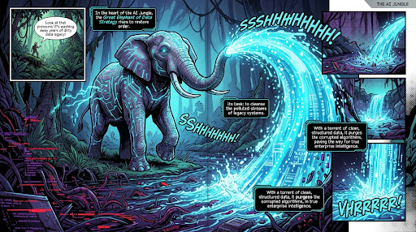

SPREAD 01-02
The Sovereign Awakening & Executive War Room
CANONICAL MASTER // 1376x768

§ 1.1
Dr. Amit Khandelwal & The Sovereign Lion
NEURAL RECURSION PROTOCOL ACTIVE
Act I: The Sovereign Awakening & Vector Sanitation

Narrative breakdown of sovereign AI governance and data sanitization in enterprise ecosystems.
The Lion's Directive: Never contract out your enterprise intuition. Model weights are commodities; sovereign orchestration and contextual alignment are indestructible moats.
The Elephant's Rule: 90% of model failure is upstream sludge. If vector databases ingest dirty legacy schemas, downstream autonomous agents will amplify hallucinations with compounding velocity.
The Jungle responds dynamically. Executive telemetry requires constant telemetry calibration; without autonomous observability, legacy policies will silently poison decisions.
Deep dive dialogue between Dr. Amit Khandelwal & The Sovereign Lion unbundling autonomous agents and data moat hygiene.
The expedition ventures deeper past the firewall mangrove into the monolithic database catacombs.